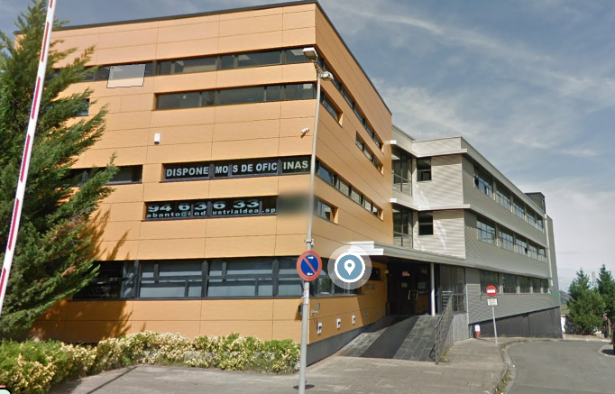

Experiencia
Estuve de practicas en infoblibliotecas en el edificio meatzari que esta situado en gallarta al lado del campo de futbol que esto fue el curso pasado 23-24. Al principio, me costo un poco adaptarme al trabajo pero consegui a adaptarme a todo tipo de trabajos que me pedian. Aprendi bastantes cosas a la hora de trabalar en equipo e individualmente. Trabaje durante 3 meses con otros dos compañeros que son Marcos Movilla y Xabier Dominguez. Aprendi muvho excel y a saber programar bien en html y css.Luego, tambien estuve haciendo muchos trabajos de excel sobre peliculas que habia que eliminar las duplicadas, o buscar peliculas y poner su id,.... En conclusión me encanto estar alli porque nunca habia estado en una empresa tan grande y estaba muy bien organizada para nosotros para poder trabajar bien y aprender a hacer cosas que no sabiamos y los jefes de las practicas eran muy majos y nos trataban muy bien.
